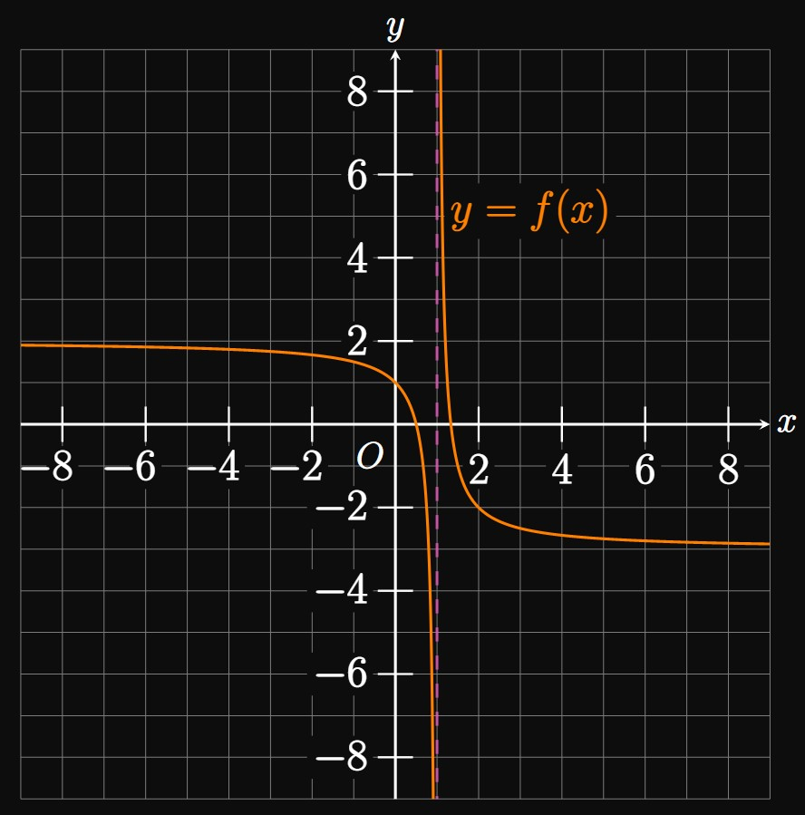

Click on a problem number to see its solution.
\(1.\)
Define a vertical asymptote
and a horizontal asymptote.
\(2.\)

Answer the following questions about the graph of \(y = f(x)\) in Figure 1.
- Find \(\lim_{x \to 1^-} f(x)\) and \(\lim_{x \to 1^+} f(x).\)
- Where does the graph of \(f\) have a vertical asymptote?
- Determine the horizontal asymptotes of the graph of \(f.\)
- Describe the end behavior of \(f(x).\)
For each of exercises 3–17, evaluate the limit.
| \(3.\) \(\ds \lim_{x \to \infty} \frac{3x - 1}{x + 3}\) | \(4.\) \(\ds \lim_{x \to -\infty} \frac{1 - x^2}{2x^2 + x}\) |
| \(5.\) \(\ds \lim_{u \to \infty} \frac{4 - u^3}{8 + 2u^4}\) | \(6.\) \(\ds \lim_{x \to \infty} \frac{4x^3 + 2x^2 - 3}{1 - x^2}\) |
| \(7.\) \(\ds \lim_{x \to \infty} \frac{x - \sqrt x}{4x + 2}\) | \(8.\) \(\ds \lim_{t \to \infty} \sqrt{\frac{t^8 - 4t^3 + t - 3}{9t^8 + 4}}\) |
| \(9.\) \(\ds \lim_{x \to -\infty} \sqrt{\frac{x^8 + 3x^2 - 5}{4x^8 + x - 2}}\) | \(10.\) \(\ds \lim_{x \to -\infty} \frac{\sqrt{x^2 + 11x - 3}}{6x - 4}\) |
| \(11.\) \(\ds \lim_{x \to \infty} \frac{\sqrt{x^6 + 7x - 3}}{5x^3 - 8x}\) | \(12.\) \(\ds \lim_{x \to -\infty} \frac{\sqrt{4x^6 + 2x^2 - 3}}{7x^3 + 4}\) |
| \(13.\) \(\ds \lim_{x \to \infty} (x + 1) \sqrt x\) | \(14.\) \(\ds \lim_{x \to \infty} (x^2 - 3x)\) |
| \(15.\) \(\ds \lim_{x \to \infty} (x^2 - x^3)\) | \(16.\) \(\ds \lim_{x \to \infty} \par{\sqrt{x^2 + 1} - x}\) |
| \(17.\) \(\ds \lim_{x \to -\infty} \par{-2x - \sqrt{x^2 + 8}}\) |
For each of exercises 18–27, determine whether the limit equals \(\infty\) or \(-\infty\).
| \(18.\) \(\ds \lim_{x \to 2^-} \frac{1}{x - 2}\) | \(19.\) \(\ds \lim_{x \to 0^+} \frac{1}{\sqrt x}\) |
| \(20.\) \(\ds \lim_{x \to 6} \frac{3}{(x - 6)^2}\) | \(21.\) \(\ds \lim_{x \to \infty} (2x - 3)(x + 7)(1 - x)^2\) |
| \(22.\) \(\ds \lim_{t \to \infty} t(3 - t)(t + 1)\) | \(23.\) \(\ds \lim_{x \to -\infty} (x - 5)(x^2 + 4)(x + 3)\) |
| \(24.\) \(\ds \lim_{x \to 2^+} \frac{x}{(x - 2)(x + 4)}\) | \(25.\) \(\ds \lim_{x \to -3^-} \frac{3x + 1}{(x - 7)(x + 3)}\) |
| \(26.\) \(\ds \lim_{u \to 0^+} \frac{1}{1 - e^u}\) | \(27.\) \(\ds \lim_{x \to 5^+} \frac{x(2x - 3)}{(x - 5)(9 - 2x)}\) |
For each of exercises 28–32, find all the horizontal asymptotes of the given function.
| \(28.\) \(\ds \frac{x^2 - 7}{5x^2 + x}\) | \(29.\) \(\ds \frac{x + 4}{8 - x^2}\) | \(30.\) \(\ds \frac{2x^3 + x + 7}{\sqrt{16x^6 + 2}}\) |
| \(31.\) \(\ds 3 + \frac{8x^2 + 3x - 5}{7x^2 + 2}\) | \(32.\) \(\ds 3 + e^{-x}\) |
\(33.\)
All rational functions have at least one vertical asymptote.
\(34.\)
Polynomials do not have horizontal asymptotes.
\(35.\)
If \(f(x)\) has a vertical asymptote at \(x = 0,\)
then \(f(0)\) is undefined.
\(36.\)
Find the vertical asymptotes of \(f(x) = 1/(x^2 - 25).\)
\(37.\)
Find the vertical asymptotes of \(g(x) = (x + 3)/(x^2 - 9).\)
\(38.\)
Find \(\lim_{x \to \infty} x^3\) and \(\lim_{x \to -\infty} x^3.\)
Describe the end behavior of \(x^3.\)
\(39.\)
Let \(f(x) = \sqrt{x^2 + 4x + 1}/(3x - 3).\)
- Find all the horizontal asymptotes to the graph of \(f.\)
- Locate the vertical asymptotes of \(f.\)
- Describe the behavior of \(f\) at each vertical asymptote.
\(40.\)
Let \(f(x) = x^2/x\) and \(g(x) = x/x^2.\)
- Does \(f\) have a vertical asymptote at \(x = 0 \ques\) Explain your answer.
- Describe the end behavior of \(f.\)
- Justify whether \(g\) has a vertical asymptote at \(x = 0.\)
\(41.\)
Boyle's Law states that the pressure \(P\) exerted on a sample of gas at constant temperature
is inversely proportional to the volume \(V\) of the container.
Find and interpret \(\lim_{V \to 0^+} P.\)
\(42.\)
A circular sector that subtends an angle \(\theta\)
is inscribed in a right triangle whose base has length \(\ell.\)
Let \(A(\theta)\) be the area of the region bounded between the sector and right triangle
(Figure 2).
- Determine an expression for \(A(\theta)\) in terms of \(\ell\) and \(\theta.\)
- Identify the domain of \(A(\theta).\)
- Find and interpret \(\lim_{\theta \to (\pi/2)^+} A(\theta).\)
\(43.\)
Let \(g\) be a function such that \(\lim_{x \to 0^-} g(x) = 5\) and \(\lim_{x \to 0^+} g(x) = -2.\)
As \(x \to \infty,\) \(g(x) \to 7;\)
as \(x \to -\infty,\) \(g(x) \to 0.\)
Calculate the following limits of composite functions with \(g.\)
- \(\ds \lim_{x \to -\infty} \sin[g(x)]\)
- \(\ds \lim_{x \to \infty} g \par{e^{-x}}\)
- \(\ds \lim_{x \to 0^+} g \par{\frac{1}{x}}\)
For each of exercises 44–49, prove the given limit.
| \(44.\) \(\ds \lim_{x \to \infty} e^x = \infty\) | \(45.\) \(\ds \lim_{x \to -\infty} \frac{1}{x} = 0\) | \(46.\) \(\ds \lim_{x \to \infty} \sqrt x = \infty\) |
| \(47.\) \(\ds \lim_{x \to \infty} e^{-x} = 0\) | \(48.\) \(\ds \lim_{x \to -\infty} 2^x = 0\) | \(49.\) \(\ds \lim_{x \to \infty} (2x + 3) = \infty\) |
\(50.\)
Let \(k\) be a positive constant.
In physics, the function \(k/r^2\) appears frequently as a model of intensity
due to distance, \(r.\)
Prove that \(\lim_{r \to \infty} (k/r^2) = 0.\)
\(51.\)
For positive constants \(a\) and \(b,\)
prove that \(\lim_{x \to \infty} ax^b = \infty.\)
\(52.\)
Consider the family of polynomials \(g(x) = x^b,\)
where \(b\) is a positive integer.
Prove that \(\lim_{x \to -\infty} g(x) = -\infty\)
if and only if \(b\) is odd.